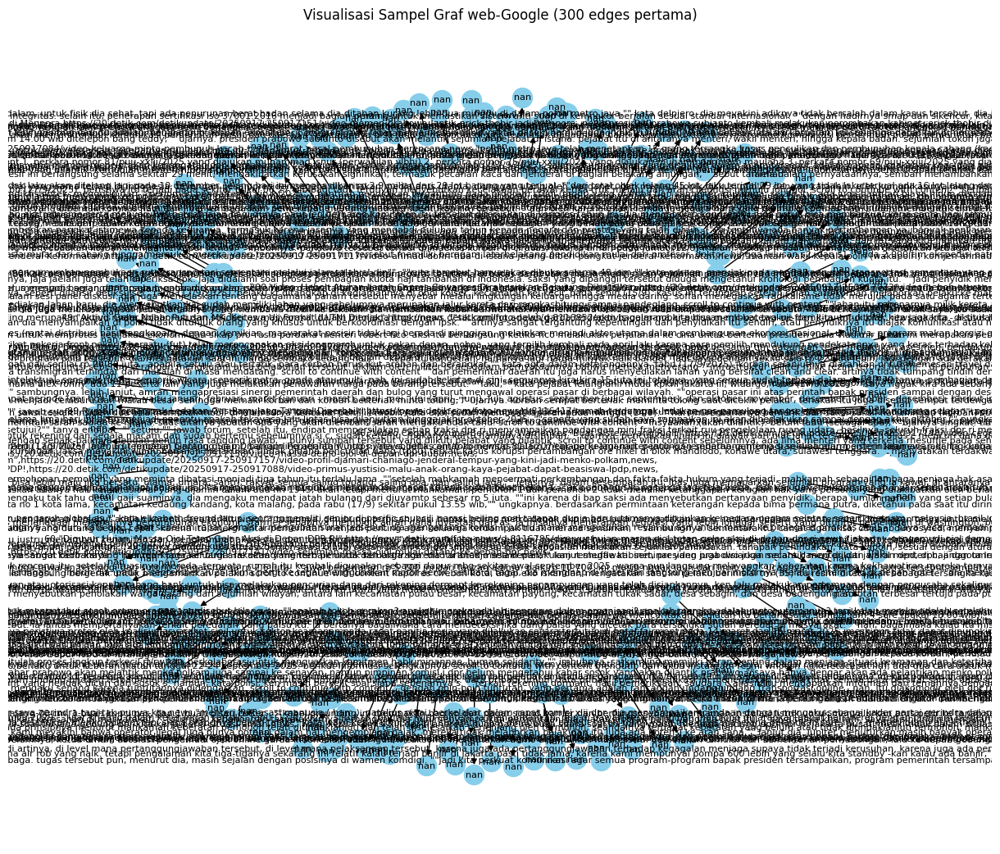

import pandas as pd
from google.colab import drive
# 1️⃣ Mount Google Drive
drive.mount('/content/drive')
# 2️⃣ Tentukan path file di Google Drive
# ⚠️ Ganti path berikut dengan lokasi file kamu di Drive
file_path = '/content/drive/MyDrive/Semester 7/PPW/berita_detik.csv'
# 3️⃣ Baca file (abaikan baris komentar)
df = pd.read_csv(file_path, sep="\t", comment="#", names=["FromNodeId", "ToNodeId"])
# 4️⃣ Tampilkan sebagian data
print("=== 10 Data Teratas ===")
print(df.head(10)) # tampilkan 10 baris pertama
print("\n=== 10 Data Terakhir ===")
print(df.tail(10)) # tampilkan 10 baris terakhir
# 5️⃣ Tampilkan info jumlah data
print("\nJumlah baris (edges):", len(df))
print("Jumlah kolom:", len(df.columns))
print("Ukuran dataset:", df.shape)
---------------------------------------------------------------------------
ModuleNotFoundError Traceback (most recent call last)
Cell In[1], line 2
1 import pandas as pd
----> 2 from google.colab import drive
4 # 1️⃣ Mount Google Drive
5 drive.mount('/content/drive')
ModuleNotFoundError: No module named 'google.colab'
!pip install Sastrawi
Collecting Sastrawi
Downloading Sastrawi-1.0.1-py2.py3-none-any.whl.metadata (909 bytes)
Downloading Sastrawi-1.0.1-py2.py3-none-any.whl (209 kB)
?25l ━━━━━━━━━━━━━━━━━━━━━━━━━━━━━━━━━━━━━━━━ 0.0/209.7 kB ? eta -:--:--
━━━━━━━━━━━━━━━━━━━━━━━━━━━━━━━━━━━━━━━━ 209.7/209.7 kB 7.1 MB/s eta 0:00:00
?25hInstalling collected packages: Sastrawi
Successfully installed Sastrawi-1.0.1
import pandas as pd
import numpy as np
from sklearn.feature_extraction.text import TfidfVectorizer
from sklearn.metrics.pairwise import cosine_similarity
import networkx as nx
from google.colab import drive
from Sastrawi.StopWordRemover.StopWordRemoverFactory import StopWordRemoverFactory
# 1️⃣ Hubungkan ke Google Drive
drive.mount('/content/drive')
# 2️⃣ Baca dataset berita
file_path = '/content/drive/MyDrive/Semester 7/PPW/berita_detik.csv'
df = pd.read_csv(file_path)
print("=== Contoh Data ===")
print(df.head(3))
# 3️⃣ Ambil kolom teks (ganti jika nama kolom berbeda)
text_column = "isi" # pastikan sesuai nama kolom di CSV
titles = df["judul"].astype(str).tolist()
texts = df[text_column].astype(str).tolist()
# 4️⃣ Gunakan stopwords Bahasa Indonesia dari Sastrawi
factory = StopWordRemoverFactory()
stopwords = factory.get_stop_words()
# 5️⃣ TF-IDF dan cosine similarity
print("\n🔄 Menghitung kemiripan antar berita...")
vectorizer = TfidfVectorizer(max_features=5000, stop_words=stopwords)
tfidf_matrix = vectorizer.fit_transform(texts)
similarity_matrix = cosine_similarity(tfidf_matrix)
# 6️⃣ Buat graph dari similarity (threshold = 0.2 biar tidak terlalu padat)
threshold = 0.2
edges = np.where(similarity_matrix > threshold)
G = nx.Graph()
for i, j in zip(edges[0], edges[1]):
if i != j:
G.add_edge(i, j, weight=similarity_matrix[i, j])
print(f"\nJumlah node: {G.number_of_nodes()}")
print(f"Jumlah edge: {G.number_of_edges()}")
# 7️⃣ Hitung PageRank
print("\n⚙️ Menghitung PageRank...")
pagerank_scores = nx.pagerank(G, alpha=0.85)
# 8️⃣ Ambil 10 berita dengan skor tertinggi
top_nodes = sorted(pagerank_scores.items(), key=lambda x: x[1], reverse=True)[:10]
print("\n🏆 Top 10 Berita dengan PageRank Tertinggi:")
for i, (idx, score) in enumerate(top_nodes, 1):
print(f"{i}. {titles[idx]} — Skor: {score:.6f}")
Drive already mounted at /content/drive; to attempt to forcibly remount, call drive.mount("/content/drive", force_remount=True).
=== Contoh Data ===
id judul \
0 1 Alfamart Gelar Donor Darah Serentak di 34 Kota...
1 2 Yusril: Presiden Tak Akan Bentuk Tim Investiga...
2 3 Bobby Nasution Wajibkan OPD di Sumut Beri Kete...
link kategori \
0 https://news.detik.com/berita/d-8117096/alfama... news
1 https://news.detik.com/berita/d-8117082/yusril... news
2 https://news.detik.com/berita/d-8117080/bobby-... news
isi
0 alfamart kembali menggelar aksi donor darah se...
1 menteri koordinator bidang hukum, ham, imigras...
2 gubernur sumatera utara (sumut) bobby nasution...
🔄 Menghitung kemiripan antar berita...
Jumlah node: 155
Jumlah edge: 400
⚙️ Menghitung PageRank...
🏆 Top 10 Berita dengan PageRank Tertinggi:
1. Prabowo Resmi Lantik 11 Pejabat: Menko Polkam Djamari Chaniago, Menpora Erick Thohir — Skor: 0.011556
2. Terungkap Pacar Bunuh Mahasiswi di Kos Ciracas Dipicu Rasa Cemburu — Skor: 0.011150
3. Sejumlah Ojol Tetap Narik Saat Massa Demo Potongan Aplikator 10 % di DPR — Skor: 0.011014
4. Erick Thohir Digeser ke Menpora, Kursi Menteri BUMN Kosong — Skor: 0.010877
5. MK Tak Terima 4 Gugatan UU TNI, Tersisa 1 Perkara Lagi — Skor: 0.010309
6. Lengkap! Daftar Nama Menteri Kabinet Prabowo-Gibran Usai Pelantikan Hari Ini — Skor: 0.010270
7. Ahmad Dofiri Jadi Penasihat Khusus Presiden Bidang Kamtibmas-Reformasi Polri — Skor: 0.009627
8. Digeser ke Menpora, Erick Thohir Sebut Bakal Ada Plt Menteri BUMN — Skor: 0.009546
9. MK Tolak Gugatan YLBHI-KontraS soal UU TNI — Skor: 0.009481
10. Tinjau Proyek Pengendalian Banjir, AHY Ungkap 3 Faktor Banjir di Bengkulu — Skor: 0.009400
import pandas as pd
import networkx as nx
import matplotlib.pyplot as plt
from google.colab import drive
# 1️⃣ Hubungkan Google Drive
drive.mount('/content/drive')
# 2️⃣ Tentukan path file di Drive
# ⚠️ Ganti path ini sesuai lokasi file kamu di Google Drive
file_path = '/content/drive/MyDrive/Semester 7/PPW/berita_detik.csv'
# 3️⃣ Baca dataset (abaikan baris komentar)
df = pd.read_csv(file_path, sep="\t", comment="#", names=["FromNodeId", "ToNodeId"])
# 4️⃣ Ambil sampel data kecil agar bisa divisualisasikan (contoh: 300 edges pertama)
sample_df = df.head(300)
# 5️⃣ Buat graf berarah
G = nx.DiGraph()
G.add_edges_from(zip(sample_df["FromNodeId"], sample_df["ToNodeId"]))
# 6️⃣ Visualisasikan graf
plt.figure(figsize=(12, 10))
pos = nx.spring_layout(G, seed=42) # posisi node agar rapi
nx.draw(
G, pos,
with_labels=True,
node_size=300,
font_size=8,
arrowsize=10,
node_color="skyblue"
)
plt.title("Visualisasi Sampel Graf web-Google (300 edges pertama)")
plt.show()
Drive already mounted at /content/drive; to attempt to forcibly remount, call drive.mount("/content/drive", force_remount=True).
/usr/local/lib/python3.12/dist-packages/IPython/core/pylabtools.py:151: UserWarning: Glyph 128 (\x80) missing from font(s) DejaVu Sans.
fig.canvas.print_figure(bytes_io, **kw)
/usr/local/lib/python3.12/dist-packages/IPython/core/pylabtools.py:151: UserWarning: Glyph 147 (\x93) missing from font(s) DejaVu Sans.
fig.canvas.print_figure(bytes_io, **kw)
/usr/local/lib/python3.12/dist-packages/IPython/core/pylabtools.py:151: UserWarning: Glyph 129 (\x81) missing from font(s) DejaVu Sans.
fig.canvas.print_figure(bytes_io, **kw)

import pandas as pd
from google.colab import drive
# 1️⃣ Hubungkan ke Google Drive
drive.mount('/content/drive')
# 2️⃣ Tentukan path file di Drive
# ⚠️ Ganti path ini sesuai lokasi file kamu di Google Drive
file_path = '/content/drive/MyDrive/Semester 7/PPW/berita_detik.csv'
# 3️⃣ Baca dataset (abaikan baris komentar)
df = pd.read_csv(file_path, sep="\t", comment="#", names=["FromNodeId", "ToNodeId"])
# 4️⃣ Gabungkan semua node (asal & tujuan), lalu ambil yang unik
unique_ids = pd.unique(df[['FromNodeId', 'ToNodeId']].values.ravel('K'))
# 5️⃣ Tampilkan sebagian ID biar tidak terlalu panjang
print("=== 20 Node ID pertama ===")
print(unique_ids[:20])
# 6️⃣ Tampilkan jumlah total ID unik
print("\nJumlah total node unik:", len(unique_ids))
Drive already mounted at /content/drive; to attempt to forcibly remount, call drive.mount("/content/drive", force_remount=True).
=== 20 Node ID pertama ===
['id,judul,link,kategori,isi'
'1,"Alfamart Gelar Donor Darah Serentak di 34 Kota, Target 26 Ribu Kantong",https://news.detik.com/berita/d-8117096/alfamart-gelar-donor-darah-serentak-di-34-kota-target-26-ribu-kantong,news,"alfamart kembali menggelar aksi donor darah serentak di 34 kota/kabupaten selama satu minggu di september 2025 dalam program sehati \'setetes darah untuk pertiwi\'. dari kegiatan sosial ini, alfamart menargetkan terkumpul 26.000 kantong darah untuk membantu memenuhi stok palang merah indonesia (pmi). ""ini adalah salah satu kontribusi alfamart untuk membantu pasien yang membutuhkan transfusi darah. dengan menggandeng pmi di 34 daerah, kami berharap 26 ribu kantong darah dapat tercapai dan tersalurkan kepada yang membutuhkan,"" kata corporate affairs director alfamart solihin, dalam keterangan tertulis, rabu (17/9/2025). scroll to continue with content kegiatan donor darah kali ini menjadi bagian dari rangkaian semarak ulang tahun alfamart (sua) ke-26. target 26.000 kantong darah dipilih sebagai refleksi usia alfamart yang telah 26 tahun melayani masyarakat indonesia. solihin menambahkan, donor darah telah menjadi kegiatan rutin alfamart. tahun ini, program juga mendapat dukungan sejumlah mitra, seperti bear brand, milo, aquviva, ichitan, dan paper bag. ""program ini menjadi bagian dari tanggung jawab sosial perusahaan. dengan terkumpulnya darah dalam jumlah besar, semakin banyak pasien yang bisa terbantu,"" ujar solihin. selain donor darah, kegiatan turut diisi dengan talkshow kesehatan bersama direktur rumah sakit islam sari asih ar-rahmah, dr irhami. pada kesempatan itu, dr irhami menekankan pentingnya persiapan sebelum mendonorkan darah. ""selain memastikan kondisi tubuh sehat, calon pendonor perlu menjaga pola tidur yang cukup serta pola makan teratur agar proses donor darah berjalan lancar,"" ujar dr irhami. apresiasi khusus juga diberikan melalui blood heroes bagi pendonor yang telah menyumbangkan darah lebih dari 90 kali. penghargaan ini diserahkan langsung oleh solihin bersama wakil ketua pmi provinsi banten, jaenudin. sementara itu, jaenudin menyampaikan apresiasinya terhadap program donor darah yang dijalankan alfamart dengan mengumpulkan 26.000 kantong darah terkumpul selama september 2025. ""alfamart dapat menjadi contoh bagi perusahaan lain. donor darah bukan hanya bermanfaat bagi kesehatan, tetapi juga wujud nyata kepedulian kepada sesama,"" ujar jaenudin. ""26.000 kantong darah yang terkumpul akan sangat berarti bagi kehidupan orang lain yang bergantung kepada stok darah di pmi,"" sambungnya. para peserta donor darah mendapat paket makanan bergizi dan goodie bag sebagai tambahan nutrisi. seperti susu murni bear brand yang 100% susu sapi steril murni, milo biskuit, air mineral aquviva yang telah melalui 7 tahap nano purifikasi untuk memastikan kemurnian dan keseimbangan mineral, ichitan serta pelbagai nutrisi tambahan. salah seorang pendonor yang baru pertama kali melakukan donor darah, rico, mengaku awalnya sempat takut. ""sedikit takut awalnya dengan jarum, tapi saya beranikan diri dan berharap darah ini bisa bermanfaat,"" kata rico. pendonor lainnya, dimas, justru rutin mengikuti kegiatan ini. ""manfaatnya saya rasakan langsung, apalagi untuk membantu yang membutuhkan. alfamart juga konsisten mengadakannya,"" ujar dimas. kegiatan donor darah alfamart ini menjadi bagian dari upaya mendukung ketersediaan darah di pmi yang sangat dibutuhkan pasien, termasuk pengidap thalassemia seperti intan (27) yang turut memberikan ceritanya di acara tersebut. intan harus rutin menjalani transfusi darah sejak usia 10 tahun. bagi intan, setiap tetes darah yang tersedia di pmi adalah penopang kehidupannya. ""kalau tidak transfusi, badan saya lemas sekali, rasanya tidak sanggup berdiri. dengan donor darah seperti ini, saya bisa tetap melanjutkan aktivitas sehari-hari,"" tutur intan. kisah intan menjadi bukti nyata bahwa donor darah tidak sekadar angka, tetapi tentang harapan yang menyelamatkan hidup."'
'2,Yusril: Presiden Tak Akan Bentuk Tim Investigasi Independen Usut Demo Ricuh,https://news.detik.com/berita/d-8117082/yusril-presiden-tak-akan-bentuk-tim-investigasi-independen-usut-demo-ricuh,news,"menteri koordinator bidang hukum, ham, imigrasi, dan pemasyarakatan (menko kumham imipas) yusril ihza mahendra mengungkap presiden prabowo subianto tak akan membentuk tim investigasi independen terkait kericuhan. tim tersebut sebelumnya diusulkan gerakan nurani bangsa beberapa waktu lalu. ""saya sudah mendapat penegasan dari bapak presiden barusan bahwa usulan untuk membentuk tim gabungan, tim pengumpulan fakta terhadap kasus-kasus demonstrasi yang berujung kerusuhan akhir agustus lalu tidak perlu dibentuk,"" kata yusril kepada wartawan di kompleks istana kepresidenan, jakarta, rabu (17/9/2025). scroll to continue with content yusril mengungkap respons prabowo sejak awal memang tidak menegaskan akan membentuk tim investigasi independen terkait demo ricuh. prabowo, saat itu kata yusril, akan mempertimbangkan lebih dulu. ""seperti yang diketahui bahwa pak lukman pada waktu itu mengusulkan kepada beliau lewat gerakan nurani bangsa, supaya membentuk tpgf. waktu itu beliau mengatakan itu adalah usul yang bagus, masuk akal, dan perlu dipertimbangkan. tapi tadi saya sudah mendapatkan penegasan dari beliau (presiden) bahwa pemerintah tidak perlu membentuk tgpf itu,"" ujarnya. yusril mengatakan prabowo menyerahkan sepenuhnya investigasi kepada tim independen lembaga nasional ham (ln ham) yang dibentuk komnas ham dan lima lembaga lain. pemerintah menghormati pembentukan tim tersebut. ""dan oleh karena enam lembaga negara ham yang dipimpin komnas ham sudah membentuk tim penyelidik non-yudisial independen, maka presiden mengatakan bahwa silakan komnas ham dan enam lembaga negara ham itu bekerja untuk melakukan penyelidikan, menemukan fakta tentang apa yang terjadi di balik demonstrasi itu,"" ujarnya. ""jadi persoalan ini sudah jelas sekiranya hari ini. kalau ada yang menanyakan apa perlu dibentuk atau tidak, presiden mengatakan tidak perlu dibentuk,"" lanjut yusril. sebelumnya, gerakan nurani bangsa menyampaikan sejumlah tuntutan kepada presiden prabowo subianto saat bertemu di istana negara, salah satunya pembentukan tim independen untuk mengusut kasus kericuhan di sejumlah titik. prabowo disebut menyetujui usulan itu. hal ini disampaikan salah satu tokoh yang tergabung dalam gerakan nurani bangsa, lukman hakim saifuddin, seusai pertemuan di kompleks istana kepresidenan, jakarta, kamis (11/9/2025). lukman mengatakan detail terkait pembentukan tim tersebut akan ditindaklanjuti oleh pemerintah. ""yang kedua adalah saya ingin sampaikan di sini bahwa salah satu tuntutan masyarakat sipil yang juga menjadi aspirasi kami dari gnb adalah perlunya dibentuk komisi investigasi independen terkait dengan kejadian prahara agustus beberapa waktu yang lalu, yang menimbulkan jumlah korban jiwa, korban kekerasan, luka-luka, dan seterusnya yang cukup banyak. presiden menyetujui pembentukan itu. dan detailnya tentu nanti pihak istana akan menyampaikan bagaimana formatnya,"" ujarnya."'
'3,Bobby Nasution Wajibkan OPD di Sumut Beri Keterangan Pers Setiap Hari,https://news.detik.com/berita/d-8117080/bobby-nasution-wajibkan-opd-di-sumut-beri-keterangan-pers-setiap-hari,news,"gubernur sumatera utara (sumut) bobby nasution menekankan pada organisasi perangkat daerah (opd) pemerintah provinsi (pemprov) sumut untuk rutin menyampaikan program-programnya kepada publik di antaranya melalui temu pers. bobby ingin masyarakat luas dapat informasi dalam mendukung suksesnya program pembangunan. sehingga update informasi kepada media harus bisa dilakukan setiap hari. ""jangan hanya kegiatan gubernur yang mereka (wartawan) ikut, tapi kalau bisa kegiatan opd juga bisa ikut di lapangan,"" kata bobby dalam keterangan tertulis, rabu (18/9/2025). scroll to continue with content hal tersebut disampaikannya saat silaturahmi dengan wartawan beberapa waktu lalu, di aula tengku rizal nurdin, rumah dinas gubernur, jalan sudirman, medan saat itu, menurut bobby, temu pers rutin bertujuan untuk transparansi sekaligus sosialisasi program pemprov sumut kepada publik. bobby menegaskan pembangunan tidak bisa berjalan sendiri. oleh sebab itu, media merupakan salah satu unsur penting dalam kesuksesan pembangunan. sementara itu, kepala dinas kominfo erwin harahap berharap temu pers rutin ini dapat jadi sarana menyampaikan program pemerintah. ""jumpa pers tiap hari dengan opd di pemprovsu ini adalah perintah langsung pak gubsu, dengan harapan, program kerja para opd terus di-update progresnya kepada rekan media,"" kata erwin. menindaklanjuti hal itu, temu pers pertama dilakukan di kantor gubernur, jalan diponegoro 30, medan, rabu (17/9/2025). temu pers pertama ini dilakukan bersama narasumber kepala badan perencanaan pembangunan penelitian dan pengembangan sumut dikky anugerah, kepala dinas kesehatan faisal hasrimi, kepala badan keuangan dan aset daerah (bkad) timur tumanggor, dan dirut rsu haji medan sri suriani purnamawati melalui fasilitas dinas komunikasi dan informatika. tema yang diusung mengenai program hasil terbaik cepat (phtc). namun berfokus pada pendidikan dan kesehatan. mengenai program kesehatan, pemprov sumut akan meluncurkan program berobat gratis (probis) dalam waktu dekat. dengan program ini masyarakat sumut akan bisa berobat hanya dengan ktp saja. ""kita bukan hanya sekadar universal health coverage (uhc) ecek-ecek, kita mau uhc betul-betul, kita punya komitmen betul-betul,"" kata faisal. tidak hanya itu, faisal juga mengungkapkan saat ini pemprov sumut telah memberikan beasiswa program pendidikan dokter spesialis (ppds) pada tujuh orang putra/putri dari kepulauan nias. nantinya para penerima beasiswa ini akan mengabdikan dirinya di kepulauan nias, sebagai dokter spesialis. selain kesehatan, dipaparkan juga beberapa phtc. salah satunya adalah program unggulan bersekolah gratis (pubg). dengan program ini siswa/siswi sma/smk/slb di sumut akan bersekolah dengan gratis. program ini akan dimulai pada tahun 2026. ""mulai (2026) dari kepulauan nias, ini daerah yang masih jadi perhatian lebih, supaya bisa mengakselerasi pembangunan. pubg ini akan memberikan pembebasan uang sekolah, kemudian 2027 masuk kepada kawasan pantai barat, kemudian di 2028 menyasar pada dataran tinggi dan seterusnya,"" kata dikky."'
'4,"Jelang Muktamar X, DPC PPP Se-Jateng Deklarasi Dukung Mardiono",https://news.detik.com/berita/d-8117078/jelang-muktamar-x-dpc-ppp-se-jateng-deklarasi-dukung-mardiono,news,"dukungan untuk plt ketua umum partai persatuan pembangunan (ppp), muhamad mardiono terus mengalir dan bertambah jelang muktamar x. deklarasi dukungan tersebut disampaikan langsung oleh para ketua dan sekretaris dpc dari kabupaten magelang, kota magelang, purbalingga, purworejo, banjarnegara, dan kebumen. sekretaris dpc kabupaten magelang, khamid nasrulloh, menyatakan muktamar x ppp yang digelar pada 27-29 september 2025 mendatang harus menjadi momentum kebangkitan partai. ""kami dpc ppp kabupaten/kota provinsi jateng menyatakan mendukung bapak h muhamad mardiono sebagai ketum dpp ppp periode 2025-2030. kami meminta agar muktamar diselenggarakan dengan baik, kondusif, dan penuh semangat silaturahim. ini kesempatan bagi ppp untuk reborn dan rebound menuju sukses pemilu 2029,"" ujar khamid dalam keterangan tertulis, rabu (17/9/2025). scroll to continue with content ia menambahkan, ppp di bawah kepemimpinan mardiono diharapkan dapat bersinergi dengan program pemerintahan presiden prabowo subianto. sementara itu, sekretaris dpw ppp jawa tengah, suyono berharap muktamar x berlangsung damai dan melahirkan kepemimpinan yang solid demi masa depan partai. ""kami berdoa semoga muktamar berjalan lancar dan damai. harapan kami, ppp ke depan lebih kuat, bisa kembali ke senayan, dan ikut membangun negara melalui kader-kader yang ada di legislatif tahun 2029,"" terangnya. menurutnya, perbedaan pandangan dalam politik adalah hal wajar, namun ia menegaskan seluruh kader harus tetap bersatu untuk memenangkan ppp di pemilu mendatang. ""harapan dari teman-teman dpc ppp jateng tadi pak mardiono untuk maju kembali dan ketika maju harus jadi. pak mardiono harus mampu membawa ppp ke depan lebih baik, yang lalu biar lah berlalu, sekarang kita perbaiki apa yang kurang untuk masa depan yang lebih baik lagi,"" ungkapnya. ""kalau kita tarung, harus yakin. serahkan doa kepada allah swt, tapi langkah kita harus mantap,"" pungkasnya."'
'5,"Ada Diskon Tiket Whoosh untuk Keberangkatan 22-24 September, Cek Infonya!",https://news.detik.com/berita/d-8117031/ada-diskon-tiket-whoosh-untuk-keberangkatan-22-24-september-cek-infonya,news,"bagi pengguna whoosh rute jakarta-bandung atau sebaliknya, ada promo ""savetember ceria bersama whoosh"" dengan potongan harga spesial hingga rp 50.000 di bulan september ini. promo berlaku untuk keberangkatan tanggal 22-24 september 2025. berikut informasi selengkapnya. scroll to continue with content mengutip dari akun instagram resmi whoosh (@keretacepat_id), ada dua cara untuk menikmati promo ini, yaitu: 1. promo reguler 2. promo flash sale ini ketentuan yang berlaku. berikut tahapan refund tiket kereta cepat whoosh. 1. lewat aplikasi - registrasi nomor rekening - pembatalan tiket whoosh 2. lewat website - registrasi nomor rekening - pembatalan tiket whoosh 3. lewat loket"'
'6,"Video: Profil Djamari Chaniago, Jenderal Tempur yang Kini Jadi Menko Polkam",https://20.detik.com/detikupdate/20250917-250917157/video-profil-djamari-chaniago-jenderal-tempur-yang-kini-jadi-menko-polkam,news,'
'7,"Jadi Kepala Badan Komunikasi Pemerintah, Angga Raka Tetap Wamen Komdigi",https://news.detik.com/berita/d-8117067/jadi-kepala-badan-komunikasi-pemerintah-angga-raka-tetap-wamen-komdigi,news,"presiden prabowo subianto melantik angga raka prabowo menjadi kepala badan komunikasi pemerintah. meski begitu, angga tetap menjabat sebagai wakil menteri komunikasi dan digital (komdigi). ""di wamen komdigi, karena fungsi di wamen komdigi, komdigi bagian komunikasi publik kan, dan ada juga di bawahnya kita mengkoordinasikan lembaga-lembaga penyiaran, lembaga-lembaga komunikasi publik. jadi intinya itu perkuatan di bidang komunikasi,"" kata angga kepada wartawan di istana negara, jakarta, rabu (17/9/2025). scroll to continue with content angga mengatakan, dengan penambahan tugas ini, dirinya diminta untuk memperkuat koordinasi komunikasi antara pemerintah dan kementerian/lembaga. tugas tersebut pun, menurut dia, masih sejalan dengan posisinya di wamen komdigi. ""jadi kita perkuat komunikasi agar semua program-program bapak presiden tersampaikan, program pemerintah tersampaikan dengan baik kepada publik dan kita juga sebagai jembatan suara-suara publik yang ada di media,"" ujarnya. ""kita juga bisa mendengarkan dan yang terpenting adalah bagaimana semua yang menjadi kebijakan atau yang menjadi arahan bapak presiden, program-program unggulan beliau itu bisa dikoordinasikan, diselaraskan, disinkronisasikan di antara kementerian dan lembaga juga bersama dengan teman-teman media semua,"" lanjutnya. angga menepis tumpang tindih antara badan yang dipimpinnya dengan pco. ia menegaskan badan komunikasi pemerintah untuk memperkuat komunikasi antarkementerian/lembaga. ""mungkin lebih fungsi, ada fungsi jubir kemudian ada fungsi juga kita mensinkronkan, mengkoordinasikan antar kl tentang kebijakan-kebijakan pemerintah agar tersampaikan dengan utuh, dengan baik. jadi tidak ada tumpang tindih, tidak ada salah narasi, seperti itu. jadi intinya hanya perkuatan di bidang komunikasi,"" ujarnya."'
'8,Eropa Percepat Sanksi Energi Rusia di Tengah Tekanan Politik,https://news.detik.com/dw/d-8117066/eropa-percepat-sanksi-energi-rusia-di-tengah-tekanan-politik,news,"presiden komisi eropa ursula von der leyen menyatakan uni eropa (ue) akan mempercepat langkah menghentikan seluruh impor minyak dan gas rusia. ia menekankan bahwa pendapatan moskow dari menjual energi fosil menjadi penopang utama ekonomi perang rusia. von der leyen juga mengungkapkan bahwa dia telah berbicara dengan presiden amerika serikat (as) donald trump, yang mengaitkan sanksi tambahan as terhadap rusia dengan syarat eropa menghentikan pembelian minyak rusia serta menaikkan tarif impor dari cina. rencana yang ada saat ini menargetkan penghentian penuh impor minyak rusia pada 2027 dan gas pada 2028. namun, ursula von der leyen mengatakan komisi eropa akan segera mengajukan paket sanksi ke-19 yang mencakup sektor kripto, perbankan, dan energi. scroll to continue with content di saat yang sama, ribuan warga slovakia turun ke jalan untuk memprotes kebijakan ekonomi dan sikap pro-rusia perdana menteri robert fico. aksi itu berlangsung ketika fico melakukan perjalanan ke cina untuk bertemu presiden rusia vladimir putin. ini merupakan pertemuan ketiganya sejak invasi penuh rusia ke ukraina dimulai. para pengkritik menilai fico mengikuti jejak perdana menteri hungaria viktor orban, yang dikenal kerap menghambat upaya sanksi uni eropa terhadap moskow. sementara itu, sekjen pbb antonio guterres menyampaikan pandangannya terkait situasi di ukraina dalam sebuah konferensi pers di new york. ""saya tidak terlalu optimistis soal kemajuan upaya perdamaian dalam waktu dekat di ukraina,"" kata sekjen pbb antonio guterres. guterres menambahkan bahwa perang antara rusia dan ukraina kemungkinan akan berlangsung ""setidaknya untuk beberapa waktu,"" menunjukkan bahwa konflik ini belum menunjukkan tanda-tanda akan segera berakhir meski ada berbagai upaya diplomasi. pernyataan ini muncul di tengah harapan yang sempat timbul setelah pertemuan presiden as donald trump dengan presiden rusia vladimir putin pada agustus 2025, yang sempat dinilai bisa membuka jalan untuk negosiasi perdamaian, tapi hingga kini belum membuahkan hasil konkret. artikel ini pertama kali terbit dalam bahasa inggris. diadaptasi oleh pratama indra dan muhammad hanafi editor: tezar aditya rahman"'
'9,Warga Segel Rumah Dapur MBG di Bandung karena Bau dan Beroperasi 24 Jam,https://news.detik.com/berita/d-8117060/warga-segel-rumah-dapur-mbg-di-bandung-karena-bau-dan-beroperasi-24-jam,news,"warga menyegel sebuah rumah di kecamatan lengkong, kota bandung yang digunakan sebagai dapur untuk makan bergizi gratis (mbg). warga mengeluhkan bau tak sedap dan aktivitas 24 jam di rumah itu. pantauan detikjabar, rumah bercat putih berkelir biru langit itu di jalan kinanti, kelurahan turangga, itu telah dipasangi stiker penyegelan warna merah oleh warga. meski terdapat motor yang terparkir, namun tidak nampak aktivitas setelah penyegelan itu dilakukan. ""sebetulnya, ini kan program pemerintah. saya setuju soal programnya, setuju banget. cuma karena kerjaannya hampir 24 jam, warga enggak ngizinin. ditambah bau juga enggak sedap,"" kata warga sekitar, adam harun saat ditemui, seperti dilansir detikjabar, rabu (17/9/2025). scroll to continue with content adam mengungkapkan, sebelumnya, sempat ada pihak yang berencana menggunakan rumah itu sebagai dapur mbg pada pertengahan agustus 2025. namun karena menimbulkan masalah, warga lalu menolak rencana itu. setelah situasinya mereda, ternyata, rumah itu kembali digunakan sebagai dapur mbg sekitar awal september 2025. warga pun langsung melayangkan keberatan karena kekhawatiran mereka ternyata memang kejadian. ""apalagi ini kan untuk 3-4 ribu porsi lah per hari, jadi pasti mengganggu. terus masalah bau juga. nah yang ini nih tiba-tiba aja bikin setelah yang pertama kita tolak,"" ungkap adam. usai sempat beroperasi, warga mendatangi rumah tersebut untuk menolak aktivitas dapur mbg. meski mendapat penolakan, aktivitas dapur tersebut ternyata terus berjalan hingga menimbulkan keluhan dari warga sekitar. ditambah, warga sempat dibuat jengkel karena ada aktivitas truk pengangkut sampah yang langsung membawa tumpukan sisa dari dapur mbg di depan rumah. warga keberatan karena aktivitas itu menimbulkan bau tak sedap. warga kemudian melaporkan kondisi ini ke polsek setempat. setelah dimediasi, pada minggu (14/9), rumah yang digunakan sebagai dapur mbg itu pun disegel oleh warga. ketua rw setempat, gama s menambahkan bahwa penyegelan rumah yang difungsikan sebagai dapur mbg itu sudah sesuai dengan kesepakatan warga. warga menolak karena memang tidak mau terganggu aktivitasnya. ""ya, warga menolak. isinya itu saja, tidak ada yang lain. inti utamanya, dari awal ketika mereka itu masuk ke wilayah rw 9 ini sudah diingatkan bahwa ini wilayah pemukiman. wilayah pemukiman itu tidak boleh ada kegiatan komersial,"" ucap gama. baca selengkapnya di sini"'
'10,Dunia Hari Ini: Perjanjian Militer Antara Papua Nugini dan Australia Gagal Tercapai,https://news.detik.com/abc-australia/d-8117056/dunia-hari-ini-perjanjian-militer-antara-papua-nugini-dan-australia-gagal-tercapai,news,"enggak sempat mengikuti perkembangan berita hari ini? abc indonesia sudah merangkum berita-berita yang terjadi dalam 24 jam terakhir dalam dunia hari ini. edisi rabu, 17 september 2025 kita awali dari papua nugini. scroll to continue with content perjanjian militer antara australia dan papua nugini gagal tercapai, sehingga kedua negara terpaksa menandatangani komunike, bukan dokumen asli. kabinet papua nugini belum menyetujui perjanjian tersebut, padahal australia sudah berharap untuk mencapai kesepakatan militer bisa tercapai pada pekan ini. perjanjian militer bernama perjanjian pukpuk mengakui serangan bersenjata ke australia atau papua nugini akan membahayakan perdamaian dan keamanan kedua negara. ""perjanjian pukpuk akan meningkatkan hubungan pertahanan antara papua nugini dan australia menjadi sebuah aliansi,"" demikian pernyataan bersama pm anthony albanese dan pm papua nugini james marape. jepang tidak akan mengakui negara palestina untuk saat ini, menurut laporan surat kabar asahi. laporan tersebut juga mencatat bagaimana perdana menteri jepang shigeru ishiba akan melewatkan pertemuan penting selama sidang umum pbb bulan ini. sikap jepang akan bertentangan dengan langkah untuk mengakui negara palestina dari prancis, inggris, dan kanada. tapi sikap jepang sejalan dengan amerika serikat, sekutu terdekat israel, yang menolak gagasan untuk mengakui negara palestina. sementara itu dalam g7, para pejabat jerman dan italia menyebut pengakuan langsung atas palestina ""kontraproduktif."" pria yang diduga menembak mati aktivis politik sayap kanan charlie kirk didakwa dengan pasal pembunuhan berat. tyler james robinson dituduh menembak charlie di kampus universitas utah valley di orem pada 10 september. ia juga didakwa melepaskan tembakan senjata api, serta beberapa dakwaan menghalangi keadilan, pemalsuan kesaksian, dan melakukan tindakan kekerasan di hadapan anak-anak. jaksa wilayah utah, jeff gray, mengatakan jaksa penuntut akan menuntut hukuman mati. tyler diduga memberi tahu teman sekamarnya, yang diidentifikasi sebagai pasangannya, bahwa ia membunuh charlie karena sudah ""muak dengan kebenciannya"" dan ""ada kebencian yang tidak bisa dinegosiasikan."" sejumlah warga di timor-leste mengatakan mereka untuk terus berunjuk rasa hingga rencana pembelian mobil baru untuk anggota parlemen dibatalkan. sementara para demonstran bentrok dengan polisi di jalanan kota dili. perdana menteri timor-leste mengimbau pengunjuk rasa untuk tidak menggunakan kekerasan, setelah melihat aksi para demonstran membakar ban, kendaraan pemerintah di dekat gedung dpr, dan melemparkan batu ke arah petugas polisi, yang dibalas dengan gas air mata. sekitar 2.000 pengunjuk rasa berkumpul di dekat parlemen nasional untuk menentang rencana pengadaan suv toyota prado bagi masing-masing dari 65 anggota parlemen."'
'11,Video: Massa Demo Ojol di Depan DPR Bubar,https://20.detik.com/detikupdate/20250917-250917158/video-massa-demo-ojol-di-depan-dpr-bubar,news,'
'12,SNBP 2026: Jadwal hingga Ketentuan Umum-Khusus,https://news.detik.com/berita/d-8117029/snbp-2026-jadwal-hingga-ketentuan-umum-khusus,news,"seleksi nasional berdasarkan prestasi (snbp) adalah salah satu jalur masuk perguruan tinggi dalam snpmb 2026 . peserta snbp 2026 adalah siswa sma/smk/ma kelas terakhir pada tahun 2026 yang memiliki prestasi unggul. berikut sederet hal yang perlu diketahui terkait snbp 2026. scroll to continue with content mengutip dari konferensi pers peluncuran snpmb 2026 yang disiarkan dalam akun youtube snpmb, setiap tahapan snbp dibuka dan ditutup pada pukul 15.00 wib. ini tanggal-tanggal penting dalam snbp 2026. berikut ketentuan umum dan ketentuan khusus dalam pelaksanaan snbp 2026. 1. ketentuan umum 2. ketentuan khusus persyaratan sekolah pemeringkatan siswa pengisian data pdss pilihan program studi dan portofolio jenis portofolio snbp 2026 seleksi jalur snbp dilakukan berdasarkan komponen sebagai berikut. *persentase komponen pertama dan kedua ditetapkan oleh masing-masing ptn. untuk seleksi dilakukan dengan tahapan sebagai berikut. sanksi dalam snbp 2026 dikenakan pada:"'
'13,"Protes Aktivis Ditahan, Admin Gejayan Memanggil Mogok Makan di Rutan Polda",https://news.detik.com/berita/d-8117039/protes-aktivis-ditahan-admin-gejayan-memanggil-mogok-makan-di-rutan-polda,news,"admin gejayan memanggil , syahdan husein, melakukan aksi mogok makan di dalam tahanan rutan polda metro jaya. aksi itu dilakukan sebagai protes lantaran aktivis ditahan saat kericuhan terjadi beberapa waktu lalu. ""sejak 11 september, syahdan sudah mogok makan. berarti, per hari ini, sudah seminggu. ini sebagai bentuk protesnya dia atas penangkapan-penangkapan seluruh aktivis,"" kata kakak syahdan, sizigia pikhansa, di polda metro jaya , rabu (17/9/2025). sizigia mengatakan aksi mogok makan itu akan terus dilakukan hingga tahanan politik dibebaskan. ""dia mengatakan akan mogok makan sampai seluruh tahanan politik dibebaskan,"" imbuhnya. scroll to continue with content dia mengatakan pihak keluarga tidak dihubungi polisi sejak syahdan ditangkap. dia juga menyebut saat ini pihak keluarga dan pendamping hukum kesulitan untuk mengunjungi syahdan hingga berdampak pada psikisnya. delpiero hegelian juga datang ke polda metro jaya untuk menjenguk adiknya, direktur lokataru foundation delpedro marhaen rismansyah, yang juga ditahan. dia menyebut berat badan adiknya turun. ""kondisi delpedro di dalam, untuk fisik dia sehat, tapi ada penurunan berat badan selama dia ditahan kurang lebih dua minggu di dalam polda metro jaya,"" kata delpiero. dia meyakini adiknya tidak bersalah dalam kasus tersebut. dia juga meminta adiknya segera dibebaskan. ""delpedro dan kawan-kawan tidak bersalah, tapi kami tidak ingin mengemis permohonan ampun dari pemerintah. kami siap menjalani proses hukumnya. namun, jika memang tidak bersalah, tolong segera dilepaskan, harus segera dilepaskan, karena mereka memiliki hak asasi manusia kawan-kawan yang ada di dalam,"" tuturnya. diketahui, sebanyak 68 orang masih ditahan di polda metro jaya dan polres jajaran buntut kericuhan yang terjadi di jakarta beberapa waktu lalu. para tersangka dibagi menjadi beberapa klaster, mulai penghasutan hingga perusakan dan pembakaran fasilitas umum (fasum). total ada enam tersangka penghasut yang diduga memicu anarki dan kerusuhan semasa unjuk rasa di wilayah dki jakarta pada 25 dan 28 agustus 2025. mereka yakni direktur lokataru delpedro marhaen rismansyah (dmr), ms, admin gejayan memanggil syahdan husein, ka, rap, dan tiktoker figha lesmana (fl) yang menyebarkan hasutan melalui platform media sosial (medsos) untuk mendorong pelajar dan anak-anak melakukan kerusuhan di lokasi unjuk rasa. ""keenam pelaku ini ditangkap setelah satgas gakkum anti anarkis melakukan penyelidikan sejak senin (25/8) dan menemukan sejumlah bukti serta keterangan yang membuat kami melakukan penetapan tersangka,"" kata kabid humas polda metro jaya kombes ade ary."'
'14,Rapat Baleg DPR Memanas Saat Dua Pimpinan Debat soal RUU Pemilu,https://news.detik.com/berita/d-8117033/rapat-baleg-dpr-memanas-saat-dua-pimpinan-debat-soal-ruu-pemilu,news,"rapat badan legislasi (baleg) dpr ri memanas saat terjadi perdebatan dua pimpinan alat kelengkapan dewan (akd), yakni wakil ketua baleg dpr ri ahmad doli kurnia dan wakil ketua komisi ii dpr ri aria bima. keduanya berdebat mengenai pembagian tupoksi untuk membahas ruu pemilu , partai politik, dan pilkada. momen itu terjadi saat rapat baleg dpr bersama komisi-komisi dpr membahas perkembangan ruu prolegnas di kompleks parlemen, senayan, jakarta, rabu (17/9/2025). mulanya, doli menjawab alasan revisi uu pemilu dan uu pilkada diinisiasi oleh baleg dpr alih-alih komisi ii dpr yang membidangi pemilu. kemudian, aria bima pun langsung memotongnya. aria bima meminta penjelasan doli terkait pengambilalihan pembahasan ruu pemilu dan ruu pilkada. scroll to continue with content ""ini sekaligus menjelaskan pak aria bima waktu itu kan mengatakan kenapa uu pemilu dan uu pilkada itu diambil inisiatif oleh baleg,"" kata doli. ""ini penting, tolong dijelaskan, pak ketua, ini mempermalukan komisi ii, kompetensi komisi ii, pengawasan anggaran, semua di komisi ii. tanggung jawab apa ke publik, tolong jelaskan kenapa tidak di komisi ii,"" kata aria bima. dia mendesak baleg segera menjawab terkait pengambilalihan itu. menurutnya, hal itu telah memalukan komisi ii sebagai mitra kpu dan bawaslu, yang merupakan penyelenggara pemilu. ""penting, kami harus jawab apa, tidak mampu komisi ii? ini kompetensi komisi ii, sampai tidak, memangnya baleg lebih kompeten untuk bicara pemilu?"" ujar aria bima. ""mohon maaf, nih, saya sudah kesulitan menjawab ke publik. setiap kita rapat dengan kpu dengan bawaslu dengan kemendagri, kalau kita bicara transformasi dpr, kita kan bicara substansi dan prosedur,"" sambung dia. menjawab hal itu, doli mengatakan saat dirinya masih menjabat ketua komisi ii periode 2019-2024, pihaknya telah mengusulkan revisi uu pemilu, uu pilkada masuk ke prolegnas 2019-2024. dia mengatakan hal itu juga telah diusulkan komisi ii untuk masuk ke prolegnas 2024-2029. ""jadi kami di komisi ii sudah mengusulkan undang-undang yang sekarang diusulkan ini, itu 2019, jadi sejak 6 tahun lalu ini uu penting,"" kata doli. ""makanya di ujung saya kirim lagi di awal periode, baleg juga kirim surat ke pimpinan komisi ii minta lagi mana uu yang perlu dibahas untuk 2024-2029, nanti tolong sekretariat baleg untuk ditunjukkan suratnya ke pimpinan komisi ii, waktu itu pimpinan komisi ii mengulangi surat yang saya buat di akhir itu, sama uu pemilu, pilkada, partai politik, pertahanan, dan sebagainya,"" sambungnya. namun, kata dia, 1 jam sebelum rapat, komisi ii mengubah surat tersebut. dia mengatakan komisi ii justru malah mengusulkan revisi uu asn untuk masuk ke prolegnas prioritas 2025. ""saya secara pribadi mantan ketua komisi ii yang merasa penting dan bertanggung jawab, sistem pemilu ini penting, saya yang mengusulkan waktu itu, memang daripada hilang di dalam susunan prolegnas baik 2024-2029 dan list 2025, saya sampaikan waktu itu dan serta-merta waktu itu menteri dalam negeri menyampaikan \'oh iya, betul\',"" papar doli. doli mengatakan pihaknya telah meminta pendapat pemerintah mengenai usulan revisi uu pemilu, parpol, dan pilkada ini. saat itu, kemendagri pun menyetujuinya. ""jadi, bapak-bapak komisi ii, kalau waktu itu tidak kami masukkan, undang-undang yang bapak usulkan sekarang nggak masuk, pak,"" katanya. doli mengaku bingung lantaran komisi ii saat itu malah mengusulkan revisi uu asn untuk masuk prolegnas prioritas tahun 2025. padahal, uu asn baru selesai direvisi pada 2023. ""saya waktu itu terus terang saja saya bingung, kenapa tiba-tiba yang diusulkan adalah uu asn, yang saya waktu itu ikut menyelesaikan uu ini selama 3 tahun,"" kata doli. ""uu asn ini selesainya 2023 diselesaikan selama 3 tahun, kenapa kok selesainya 2023 diusulkan lagi di 2025 untuk dibahas?"" sambung dia. lebih lanjut, doli berbicara mengenai metode yang akan dipakai dalam membahas ketiga uu tersebut. dia mengatakan dpr memiliki dua metode yang bisa dipilih, yakni omnibus law dan kodifikasi. ""saya sekali lagi mengulang dalam uu nomor 59 tahun 2024 tentang rpjmp, di situ dijelaskan bahwa pembahasan uu pemilu, pilkada, dan partai politik itu diselesaikan secara kodifikasi itu perintah undang-undang,"" katanya. dia pun mendengar informasi ketua komisi ii menginginkan ketiga uu itu dibahas menggunakan metode omnibus law . menurutnya, jika dengan omnibus law , bisa ditambah dengan uu lainnya. ""tapi kalau mau mengikuti uu 59, cuma tiga yang dikodifikasi, pemilu, pilkada, parpol. walaupun dalam putusan mahkamah konstitusi rezim pemilu dan rezim pilkada itu tidak dibedakan, jadi harus ada satu, uu pemilu saja,"" kata doli. ""ini menjelaskan, pak ketua, kenapa teman-teman ini mengusulkan banyak dan memang harus dikerjakan secara sekaligus mudah-mudahan clear ,"" imbuhnya. doli pun menegaskan pihaknya tidak berupaya merebut tupoksi komisi ii untuk membahas ruu pemilu, pilkada, dan parpol. dia pun mendukung ketiga uu tersebut masuk ke prolegnas prioritas 2026. ""jadi tidak ada lagi persepsi baleg mau intercept . baleg bukan tukang cari kerjaan, pak, kami tuh nggak minta-minta uu mana yang kami kerjakan, itu semua diputuskan pimpinan dan dirapatkan di badan musyawarah,"" pungkasnya."'
'15,"Ditemukan di Malang, Bima Sedang Jualan Mainan di Klenteng",https://news.detik.com/berita/d-8117028/ditemukan-di-malang-bima-sedang-jualan-mainan-di-klenteng,news,"bima permana putra (bpp) , pria yang dilaporkan hilang oleh kontras saat kericuhan di jakarta, kini telah ditemukan. bima ditemukan sedang berjualan mainan di sebuah kelenteng di malang, jawa timur. ""yang bersangkutan kami temukan di kelenteng sedang jualan mainan barongsai,"" kata kabid humas polda metro jaya brigjen ade ary syam indradi kepada wartawan, rabu (17/9/2025). bima ditemukan oleh tim subdit resmob ditreskrimum polda metro jaya di klenteng eng an kiong, jalan re martadinata kota lima, kecamatan kedung kandang, kota malang, pada pukul 13.55 wib tadi. scroll to continue with content pencarian dilakukan setelah timsus polda metro jaya menyelidiki informasi laporan orang hilang yang disampaikan oleh kontras dalam sebuah pernyataan pers. ""berdasarkan informasi (dari kontras) itu, kemudian tim melakukan pencarian dan menemukannya di malang,"" kata dia. ade ary menyampaikan bima adalah salah satu nondemonstran yang dilaporkan hilang pada saat kericuhan terjadi di kwitang, jakarta pusat, pada 29-31 agustus 2025. ""bpp ini tidak sedang demo, tetapi jualan asongan,"" imbuh dia. pada 1 september 2025, bima pergi ke tegal menggunakan motor aerox. setiba di tegal, dia menginap di hotel dan langsung menjual motornya melalui sistem cod di depan hotel. ""dia menjual motor rp 5 juta melalui akun facebook shiba taiju,"" katanya. setelah itu, dia pergi ke stasiun tegal dan melanjutkan perjalanannya ke malang dengan menggunakan kereta. setiba di malang, dia memesan hotel selama dua hari. ""kemudian tanggal 5 september setelah check out dari hotel, dpp pergi ke kelenteng dan menjual mainan barongsai yang dia beli dari akun tiktok shop seharga rp 400 ribu,"" jelasnya. sejak 5 september hingga ditemukan siang tadi, bima beraktivitas jualan mainan barongsai. setelah berjualan, dia beristirahat di pom bensin mergosono. ""kemudian pada tanggal 17 september, yang bersangkutan diamankan oleh anggota resmob di lokasi tempatnya jualan, yaitu di kelenteng, en ang kiong,"" pungkasnya. sebelumnya, melalui akun instagram @kontras_update, kontras yang membuka posko pengaduan orang hilang menyebutkan ada tiga orang yang masih hilang sejak demo pada 30-31 agustus 2025. kontras menyebut satu orang merupakan nondemonstran, sedangkan dua lainnya adalah demonstran. berikut 3 identitas orang tersebut: 1. bima permana putra (nondemonstran) - hilang sejak 31 agustus 2025 - lokasi terakhir di glodok, jakarta barat 2. m farhan hamid (demonstran) - hilang sejak 31 agustus 2025 - lokasi terakhir di brimob kwitang, jakarta pusat 3. reno syahputradewo (demonstran) - hilang sejak 30 agustus 2025 - lokasi terakhir di brimob kwitang, jakarta pusat"'
'16,SNPMB 2026 Kapan Dibuka? Ini Jadwal Registrasi Akun,https://news.detik.com/berita/d-8117026/snpmb-2026-kapan-dibuka-ini-jadwal-registrasi-akun,news,"informasi seputar seleksi nasional penerimaan mahasiswa baru (snpmb) tahun 2026 sudah diumumkan kemarin. hal ini penting untuk diketahui oleh calon mahasiswa atau siswa-siswi yang berada di kelas 12 agar bisa mempersiapkan diri untuk jenjang perkuliahan. berikut ulasannya. scroll to continue with content seleksi nasional penerimaan mahasiswa baru (snpmb) tahun 2026 adalah sistem seleksi masuk perguruan tinggi tahun 2026. ini untuk program sarjana, diploma empat/sarjana terapan, dan diploma tiga. berdasarkan konferensi pers peluncuran snpmb 2026 yang disiarkan dalam akun youtube snpmb, ada tiga jalur masuk perguruan tinggi dalam snpmb 2026, yaitu: berikut ini kuota seleksi snpmb 2026 untuk jalur snbp, snbt, dan mandiri. 1. seleksi nasional berdasarkan prestasi (snbp) 2. seleksi nasional berdasarkan tes (snbt) 3. seleksi mandiri (tergantung pada mekanisme di ptn masing-masing dan dapat menggunakan nilai utbk 2026) registrasi akun snpmb dilakukan melalui portal snpmb ( https://portal.snpmb.id ). berikut jadwalnya. informasi penggunaan akun snpmb: pelaksanaan snpmb mempunyai beberapa tujuan, seperti:"'
'17,Legislator Gerindra Desak Tinjau Ulang Izin Hutan Tanaman Industri di Babel,https://news.detik.com/berita/d-8117025/legislator-gerindra-desak-tinjau-ulang-izin-hutan-tanaman-industri-di-babel,news,"anggota komisi xiii dpr fraksi gerindra, melati erzaldi, mendesak pemerintah meninjau kembali izin pengelolaan hutan tanaman industri (hti) di kabupaten bangka selatan. anak buah ketum gerindra prabowo subianto ini menegaskan suara penolakan masyarakat harus menjadi perhatian serius. ""mayoritas masyarakat menolak keberadaan hti ini. aspirasi mereka harus diperhatikan pemerintah dengan mengkaji ulang, bahkan bila perlu mencabut izinnya, melalui pemerintah provinsi,"" kata melati dalam keterangannya, rabu (17/9/2025). melati menyebutkan penolakan warga datang dari sejumlah wilayah, antara lain kecamatan pulau besar, kecamatan payung, kecamatan tukak sadai, desa sebagin, dan desa bedengung. sorotan terbesar tertuju pada pt hutan lestari raya (hlr), yang memegang konsesi sekitar 31 ribu hektare lahan hti di bangka selatan. scroll to continue with content melati mengingatkan bahwa pemerintah pernah mengambil langkah serupa. pada 2022, kementerian lingkungan hidup dan kehutanan (klhk) mencabut izin pt bangkanesia karena tidak menunjukkan progres lapangan. melati menilai pengalaman itu bisa menjadi rujukan untuk memastikan pengelolaan hutan berjalan sesuai aturan serta berpihak pada masyarakat. selain minim perkembangan, melati menyebut izin hti kerap tumpang tindih dengan aktivitas warga yang sudah lama mengelola lahan untuk berkebun. ""masyarakat merasa resah karena lahan yang mereka kelola justru masuk kawasan hti. jika aspirasi mayoritas adalah pencabutan izin, saya mendukung penuh,"" tegasnya."'
'18,Mensesneg Ungkap Plt Menteri BUMN Bakal Diisi Wamen,https://news.detik.com/berita/d-8117013/mensesneg-ungkap-plt-menteri-bumn-bakal-diisi-wamen,news,"menteri sekretaris negara (mensesneg) prasetyo hadi mengungkap presiden prabowo subianto belum menunjuk plt menteri bumn setelah erick thohir digeser menjadi menteri pemuda dan olahraga (menpora). prasetyo menyebut istana masih mencari sosok yang pas untuk mengisi plt menteri bumn . ""menteri bumn definitif memang belum ditunjuk karena kita masih mencari sosok dengan berpindahnya tugas kepada bapak erick thohir ke kementerian pemuda dan olahraga,"" kata pras kepada wartawan di istana negara, jakarta, rabu (17/9/2025). pras berharap erick thohir dapat memperbaiki sistem olahraga ke depan. tidak hanya terkait sepakbola, tapi juga cabang olahraga lain yang diharapkan menuju kelas dunia. scroll to continue with content ""memang kita berharap tidak hanya sepakbola. ini kan kita semua paham bahwa pak erick thohir punya sejarah prestasi yang panjang dalam hal olahraga, dan itu yang kita inginkan tidak hanya sepakbola. beban yang kita berikan kepada pak erick thohir sangat berat. untuk semua olahraga, kita pengin ya menuju kelas dunia,"" katanya. pras menepis wacana peleburan bumn ke badan pengelola investasi (bpi) danantara. namun ia mengungkap akan adanya evaluasi atau perubahan di kementerian. ""belum, kan sekarang sedang proses ya danantara juga sedang proses membenahi manajemen dan operasional di bumn-bumn kita. nah, kalau kemudian nanti dalam perjalanannya itu kita perlu melakukan perubahan terhadap kementeriannya, nanti kita lihat,"" ujarnya. terkait posisi plt menteri bumn, pras menyebut kemungkinan akan diisi wamen. sejauh ini belum ditunjuk siapa wamen yang akan mengisi posisi tersebut. ""kemungkinan dari wamen,"" ujarnya. ""belum, saya belum tanda tangan ad interim -nya,"" lanjut pras. diketahui, kementerian bumn memiliki tiga wakil menteri. mereka adalah kartika wirjoatmodjo, aminuddin ma\'ruf, dan dony oskaria."'
'19,Pertamina Perbarui Website Layanan Informasi Jadi Ramah Disabilitas,https://news.detik.com/berita/d-8117011/pertamina-perbarui-website-layanan-informasi-jadi-ramah-disabilitas,news,"pt pertamina (persero) meluncurkan wajah baru sistem layanan informasi berbasis website yang ramah disabilitas. pertamina memastikan seluruh masyarakat termasuk disabilitas dapat memperoleh informasi mengenai layanan, program, dan kegiatan pertamina. vice president corporate communication pertamina fadjar djoko santoso mengatakan pertamina komitmen terhadap transparansi informasi sebagai bagian dari prinsip tata kelola perusahaan yang baik dengan memberikan kemudahan akses informasi kepada masyarakat, termasuk kepada disabilitas. ""pertamina terus memperkuat komitmen layanan informasi yang inklusif dilengkapi dengan accessibility fitur pada website layanan informasi,"" jelas fadjar dalam keterangan tertulis, rabu, (17/9/2025). scroll to continue with content fadjar menambahkan momentum ini merupakan semangat baru untuk memberikan layanan informasi yang inklusif kepada masyarakat. ""tampilan wajah desain baru pada website layanan informasi merupakan spirit dan energi baru untuk informasi yang inklusif,"" terang fadjar. lebih rinci, fadjar memaparkan layanan informasi dengan fitur aksesibilitas ini dilengkapi dengan pilihan penyesuaian tampilan website seperti peningkatan kontras, pembesaran teks, pengaturan jarak antar teks, highlight link, hingga opsi ramah disleksia. selain itu, pengguna juga dapat menghentikan animasi, menyembunyikan gambar, dan menyesuaikan tinggi baris tulisan sesuai kebutuhan. ""inovasi pengembangan sistem layanan informasi ini merupakan wujud komitmen pertamina terhadap prinsip environmental, social, and governance (esg) serta penerapan tata kelola perusahaan yang baik,"" tambahnya. selain menyediakan layanan informasi di website korporasi pertamina, kini pertamina juga tengah mempersiapkan layanan informasi berbasis aplikasi mobile apps untuk memastikan keterbukaan informasi publik. ""inovasi penyediaan kanal akses informasi merupakan fondasi penting dalam membangun hubungan yang transparan, akuntabel, dan berkelanjutan dengan masyarakat,"" ucap fadjar. sementara itu, pendamping disabilitas fungsi trading pertamina patra niaga, lina menambahkan layanan informasi yang ramah disabilitas merupakan bukti bahwa pertamina memberi kesempatan untuk mendapatkan informasi bagi semua orang. ""dengan adanya layanan informasi yang dapat diakses disabilitas pada sistem layanan informasi pertamina, membuktikan bahwa pertamina memberikan kesempatan kepada semua kalangan termasuk disabilitas memiliki hak yang sama untuk mendapatkan informasi seputar pertamina,"" ungkap lina."']
Jumlah total node unik: 202